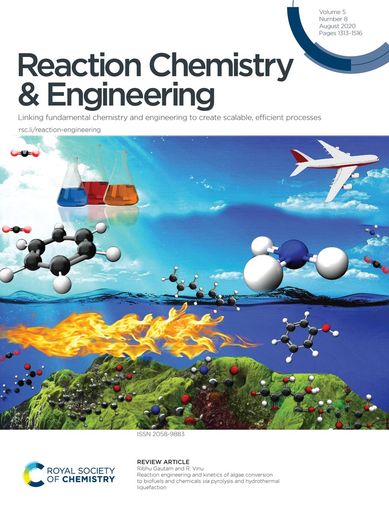
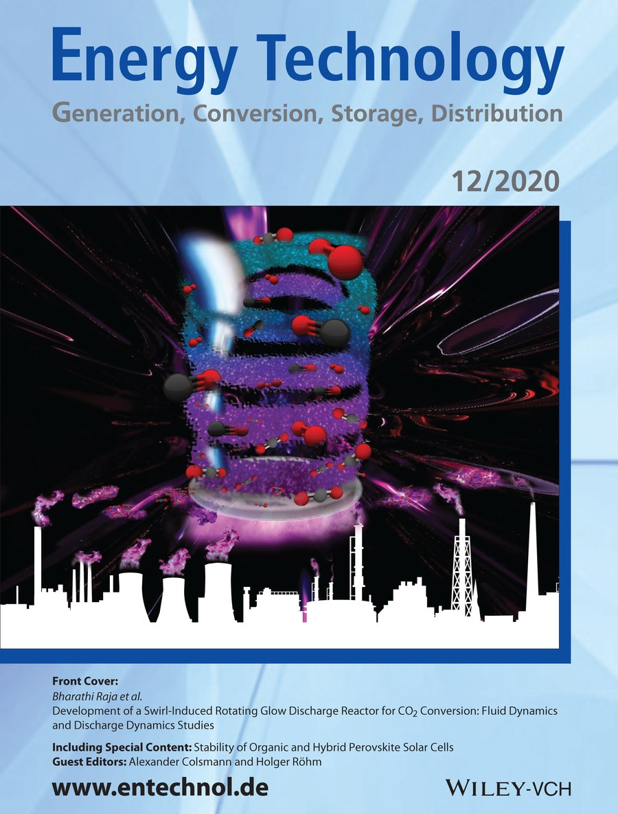
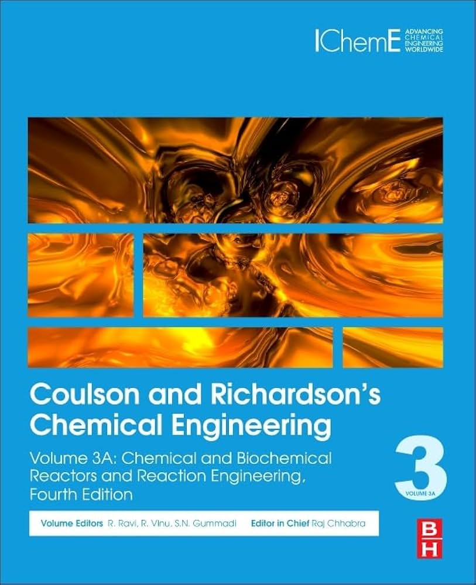
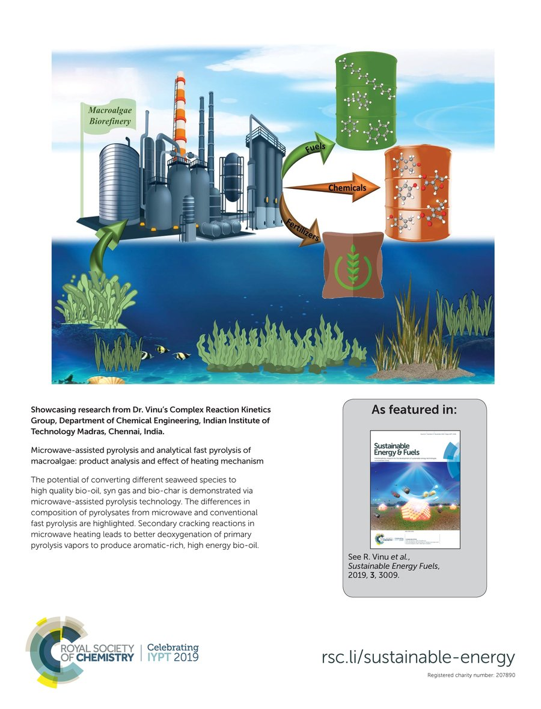

Scholarly output
The published record.
Featuring 173 research articles along with books, chapters, and proceedings from the CREST Laboratory’s thermochemical research portfolio.
Citation metrics from Google Scholar, as of November 2026









Publication archive
Browse the collection.
Journal articles, edited books, chapters, and proceedings, each with the full year-by-year listing, abstracts, journal links, and cover art.
- 01173
Research articles
Peer-reviewed journal articles across energy, catalysis, and environmental engineering, searchable and grouped by year.
- 021
Edited books
Edited volumes and reference works connected to the laboratory’s core research themes.
- 0311
Book chapters
Invited and contributed chapters covering methods, reaction engineering, and sustainable conversion pathways.
- 044
Conference proceedings
Technical contributions presented across energy and thermochemical engineering forums.
Spotlight
Selected recent works.
-
2026
Microwave-assisted pyrolysis of polyethylene terephthalate with polypropylene, polystyrene, and polyethylene for resource recovery
Journal of Material Cycles and Waste Management 2026, published online 7 October 2026
Full text -
2026
Effect of HZSM-5 catalyst on product distribution of pyrolysis of PLA and PBAT/PLA blend
Journal of Material Cycles and Waste Management 2026, 28, 3157–3176
Full text -
2026
Catalytic hydrodeoxygenation of bio-oil produced from co-pyrolysis of Mesua ferrea L. oilseed and PET plastic
Catalysis Today 2026, 477, 115937
Full text -
2026
Co-pyrolysis of rice straw and empty fruit bunch: effects of blending on product yields and bio-oil composition
Sustainable Energy & Fuels 2026, 10, 1959–1972
Full text -
2026
Single pellet combustion studies of biomass and its blends for bioenergy
Results in Engineering 2026, 30, 110604
Full text -
2026
Highly ordered mesoporous γ-alumina with distinct pore symmetry: Design, synthesis, characterization, and catalytic performance in biomass fast pyrolysis and glycerol dehydration
Microporous and Mesoporous Materials 2026, 409, 114167
Full text
Research Articles
173Journal publications grouped by year, with expandable abstracts and links to the published record.
No publications matched your search.
Try a different keyword or adjust the year filter.Edited Books
1Edited volumes and reference works connected to the laboratory's core research themes.
Book Chapters
11Invited and contributed chapters covering methods, reaction engineering, and sustainable conversion pathways.
Conference Proceedings
4Conference proceedings and technical contributions presented across energy and thermochemical engineering forums.